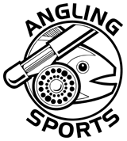
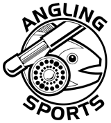

Carolinian Canada - Carolinian Canada’s diverse network advances a strategic ‘Big Picture’ vision for healthy landscapes and a green future in Canada’s deep south.
Friends of the Thames / Thames River Cleanup - The Friends of the Thames has been organising and promoting the Annual Thames River Cleanup every spring for the past 14 years.Environmentally concerned volunteers, landowners, clubs, organizations and municipalities have come together during Earth week to help clean up portions of the Thames River watershed areas.Check out their Contacts page to find out who or what organization is cleaning up your favourite section of the Thames River.
Nature London - Nature London undertakes a variety of projects to promote environmental awareness, enhance habitat and protect natural areas. MFN members participate in the Christmas Bird Count, the annual Butterfly Count and other initiatives which encourage the study of local natural history.
North Shore Steelhead Association - The primary concern of the founding members was the protection and enhancement of the north shore migratory Rainbow Trout (Steelhead) fishery, but their foresight led to the inclusion of all coldwater species in our constitution. This, by default, includes all species that use Lake Superior tributaries in their life cycle.
Ontario Streams - To promote the protection and rehabilitation of Ontario's rivers and streams through education and community action.
Ontario Federation of Anglers and Hunters - You may think you know who they are and what they do, but check the site, you may be surprised!
Trout Unlimited Canada - To conserve, protect and restore Canada's freshwater resources and their watersheds for current and future generations.
beginning of header
hero-header
RESOURCES
Sites of Interest to the 'ConserFishinist'
Conservation
Conservation Authorities
Ausable Bayfield Conservation Authority
Credit Valley Conservation Authority
Essex Region Conservation Authority
Grand River Conservation Authority
Halton Region Conservation Authority
Hamilton Region Conservation Authority
Long Point Region Conservation Authority
Lakehead Region Conservation Authority
Lower Thames Valley Conservation Authority
Metro Toronto & Region Conservation Authority
Rideau Valley Conservation Authority
St.Clair Region Conservation Authority
Upper Thames River Conservation Authority
Related Links
Ian Colin James - This late great great friend of the Thames River and the TRAA was a Fly Fisherman, Tyer, Guide, Instructor, Author, College Prof', Artist, Raconteur, and Man About Town.
Western Ontario Fish & Game Protective Association - Quite likely the oldest and still one of the most viable conservation clubs in the London area. It's also where the TRAA holds their meetings.
Forest City Fly Fishing Club - Learn everything about all things fly fishing. Also great friends and supporters of the TRAA.
Forest City Bassmasters - Activities include hosting fishing
tournaments, guest speakers and events, and conservation activities with a focus on fun, friendship, learning and friendly competition.
Real-Time Hydrometric Data - Explore real-time river levels and flows (discharges) before you plan your fishing or canoe/kayak trip.
Match Angling Club of Ontario - An interesting site with lots of info' on match angling, a growing aspect of our sport in North America.
SOTTO Fly Fishing Club - This club organizes a series of fun fly fishing competitions across Ontario, one of which is the Thames River Open.
Thames River Paddling Routes - The aim of this website is to create a single source for accessing information for paddling the Thames River.
Governmental Entities
Governmental Entities
Angling Sports - 681 Highbury Ave N, London, ON N5W 4L4
(519-649-7429)
Lambeth Rod & Tackle - 2404 Main Street, London, ON N6P 1R2
(519-652-5598)
John's Fly Materials - 96 Rectory Street, London, ON N5Z 1Z9
(226-270-9029)
Angling Outfitters - 684460 Road 68, Woodstock, ON N4S 7V7
(519-539-5494)
local supporters
LOCAL SUPPORTERS

 
